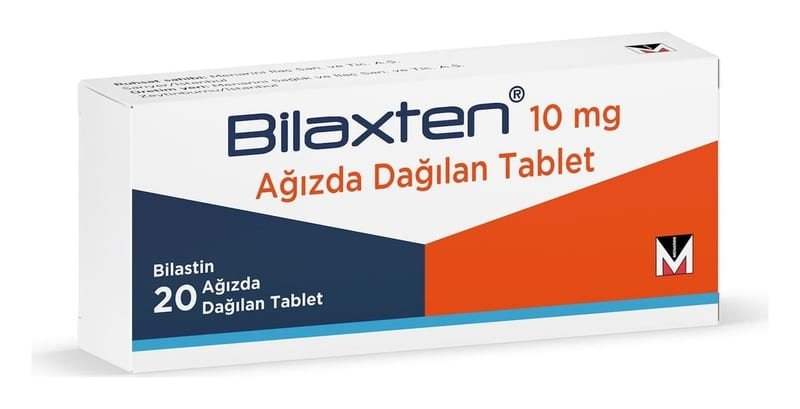

Bilaxten 10 mg Ağızda Dağılan Tablet (20 Adet)

Ne için kullanılır
KT · Bölüm 1BİLAXTEN, antihistaminik bir etkin madde olan bilastin içerir. BİLAXTEN, saman nezlesi (hapşırma, kaşıntı, burun akıntısı ve tıkanıklığı ile gözlerde kızarma ve sulanma) ve alerjik rinitin diğer formlarının tedavisinde kullanılır. Ayrıca kaşıntılı deri döküntülerinin (kurdeşen veya ürtiker) tedavisinde de kullanılabilir.
BİLAXTEN 10 mg ağızda dağılan tablet, vücut ağırlığı en az 15 kg olan 2 ila 11 yaş arasındaki çocuklarda endikedir.
BİLAXTEN 10 mg, ağızda dağılan tablet formundadır. BİLAXTEN, her biri 10 ağızda dağılan tablet bulunan blisterlerde, toplam 20 ağızda dağılan tablet içeren karton kutularda sunulmaktadır.